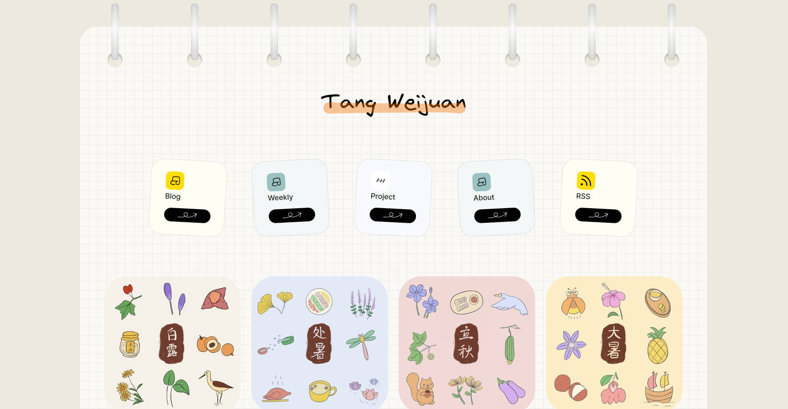
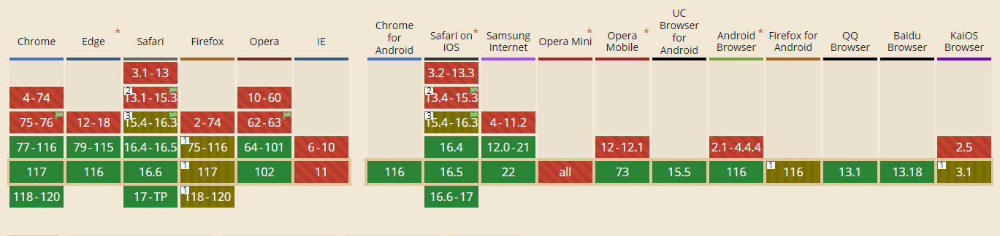

网站加载慢，怎么解决？ #
这篇文章是站在开发者（我）的角度的，介绍我开发了一个网站，由于网站首页图片资源众多且图片较大，导致首页加载缓慢，我是如何处理的。
帮我写个网站吧 #
最近帮一个朋友写了个网站：https://tangweijuan.com，这个网站是部署在 github page 上的

作为一个设计师，平时比较喜欢画画，所以网站主页面存在大量的图片资源，当用户打开主页时，一次性加载如此多的高清图片资源，网页打开的速度是非常慢的。
那么如何解决呢？
加速 #
- 图片懒加载
首先立刻从图片出发，让首页图片(懒加载)，img 元素可以设置 loading="lazy" 属性表示该图片具有懒加载的功能，但是并不是所有浏览器都支持该属性，点击查看：

所以需要自己实现图片懒加载或者用一些相关的库。
- 添加模糊图片、压缩图片
用了懒加载之后，由于原图还是过大，导致屏幕图片占位空白时间较长，经常浏览网页的朋友，应该知道，我们可以添加一张模糊的图片（很小很小的图片）用来高清图片加载前的展示占位。
当然，我们不可能每次用软件生成模糊图片，得自动化，用程序去处理，每次提交图片后，程序能够自动生成对应的模糊图片。这个功能可以借助 plaiceholder 实现，它是一个 nodejs 库，专门用来生成模糊图片的。
const generateLowQualityImage = async (imgSrc: string) => {
const buffer = await readFile(imgSrc);
return await getPlaiceholder(buffer, { size: 10});
};
但是由于网页部署在 github page 上，国内访问速度一般都很感人，而且原高清图片太大了，所以不得不压缩图片，使用 sharp 可以达到我的目的。
const minifyImage = async (imgSrc) => {
const image = sharp(imgSrc);
await image.resize({
width: 300,
height: 300
}).toFormat("jpeg", { mozjpeg: true, quality: 80});
}
- 免费 CDN “加速”
最后可以使用 Cloudflare 免费版进行 CDN “加速”，因为我用的免费版，所以效果貌似并不是很好，感兴趣的可以在网上搜一搜相关的教程。
结果 #
经过上面的操作，网站主页的速度比之前快了很多。
（完）